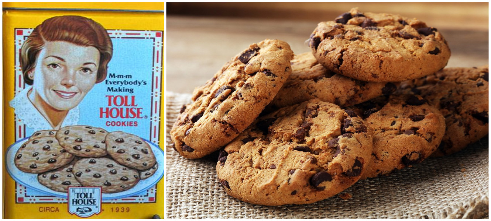
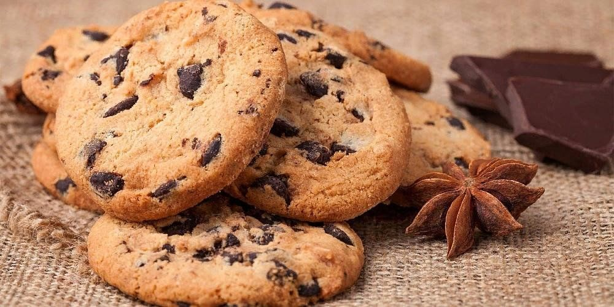

История появления печенья
Рут Грейвс Уэйкфилд была искусным поваром и диетологом и часто читала лекции о полезной еде. Кроме того, она вместе с мужем руководила сетью кондитерских «Toll House Inn» в Массачусетсе. Она готовила всю еду, подаваемую в гостиницах города, и была известна своими шикарными десертами.
Однажды в 1930 году она ради интереса добавила в тесто для печенья немного тёртого шоколада. Её кулинарное изобретение быстро стало настоящим хитом, и Уэйкфилд запатентовала этот рецепт. Печенья начали рекламировать в местных газетах.Рецепт, который Уэйкфилд назвала Chocolate Crunch Cookie, стал дико популярным после того, как был расхвален на радио. Печенье оказалось настолько удачным, что фактически увеличило продажи шоколада Nestle. В итоге Nestle и Wakefield заключили сделку. Nestle предоставила ей пожизненный запас бесплатного шоколада, а взамен они могли перепечатать уникальный рецепт на своей упаковке.
